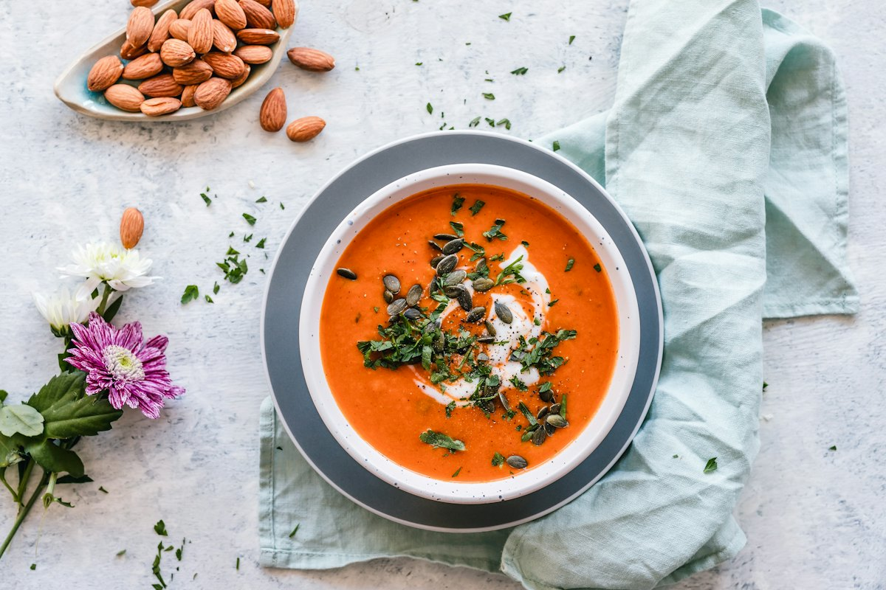
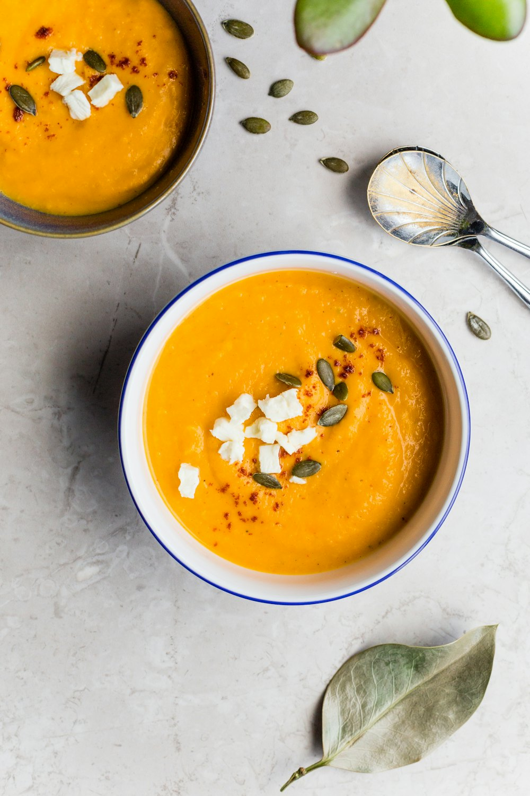
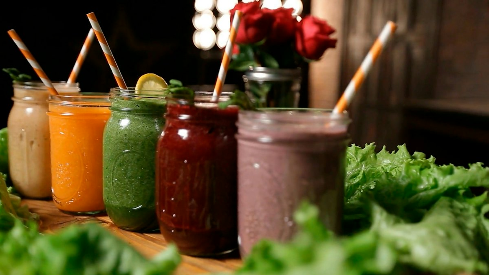

Big
About 25 cm
The everyday carrot, done properly. Sweet and crunchy. The right size for lunchboxes, stir-fries and roasting trays.
$4.50/kgOrder
Pete grows big, giant and humungous carrots in the deep red soil of Olinda, up in the Dandenong Ranges. The ones too odd-shaped to sell whole become juice, cake and soup.
Pete doesn't grow baby carrots. The cool, wet hills around Olinda suit carrots that take their time, so he leaves them in the ground until they're ready and pulls them by hand. They come in three sizes.
The everyday carrot, done properly. Sweet and crunchy. The right size for lunchboxes, stir-fries and roasting trays.
One of these will feed a family. Good for roasting whole, soups and anything that needs a lot of carrot.
Grown in Pete's deepest beds and pulled with two hands. People stop at the gate just to look at them. Limited numbers each week.
Carrots that come up forked or twisted go into Pete's kitchen. All three are made on the farm and sold at the gate.
Cold-pressed every morning from Big carrots, with a squeeze of lemon and a knob of ginger. One litre is roughly a kilo and a half of carrots.
Dense, spiced and packed with Giant carrot, walnuts and sultanas, under a thick layer of cream cheese icing. Baked Thursdays and Saturdays.

Roasted carrot, ginger and a little coconut milk. Thick enough to stand a spoon in. Sold chilled, ready to heat.
Four recipes from Pete's kitchen. Open a recipe to see the ingredients and method.
The same recipe Pete's mum used, with more carrot than she'd have thought sensible.

Roasting the carrots first makes them sweeter and gives the soup more depth than boiling ever will.

A vegetarian centrepiece for a Sunday lunch. Carve it at the table.

The morning juice Pete drinks before the sun's up. A juicer makes it easy, but a blender and a sieve will do.
Select a photo to see it larger.
Three stories from the farm.
"One Tuesday I was a footballer. By Wednesday I was a man sitting in his car outside a vegetable stall, crying into a Giant carrot."
Read Jeff's storyHow a single carrot from bed seven ended up costing me a wheelbarrow, a fence post and most of a Saturday.
Read moreThe wartime rumour, the purple carrots nobody talks about, and what a carrot actually does for your eyes.
Read moreBuy at the farm gate in Olinda, or email an order and collect it. We deliver around the Dandenong Ranges on Fridays.
Email your order